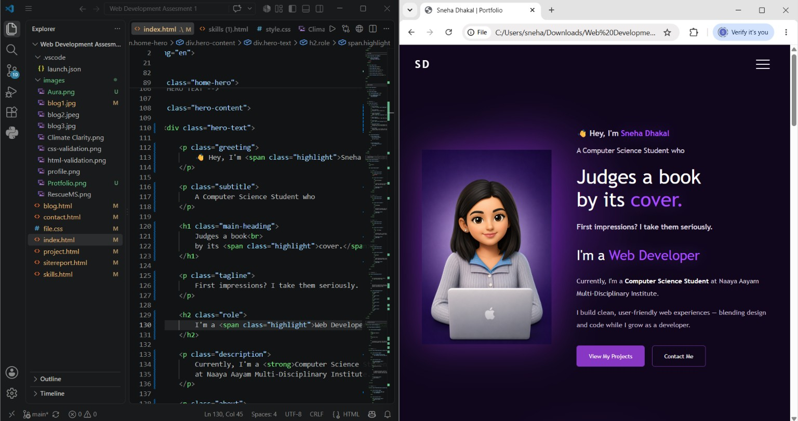
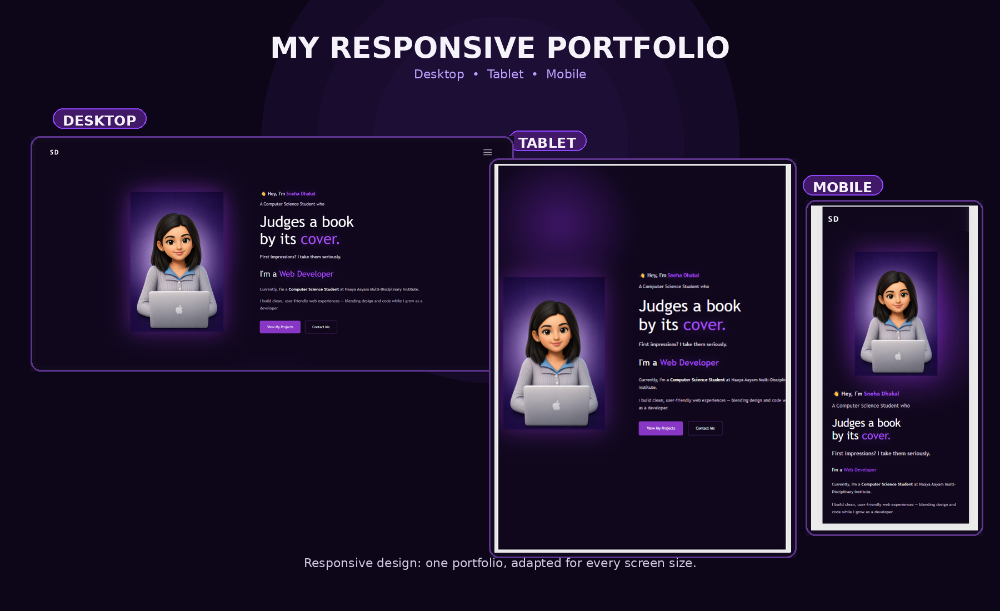

15 August 2026
My Journey Into Web Development
Web development is an area of computer science that I have become increasingly interested in during my studies. When I first started learning about websites, I was curious about how a webpage could be created using code and how HTML, CSS and JavaScript work together to create an interactive website. Developing this portfolio gave me an opportunity to apply these concepts to a complete multi-page website rather than studying them only as individual topics.
I began my portfolio project by planning the different pages and deciding how information should be organised. My portfolio includes a Home page, Skills page, Projects page, Blog page, Contact page and Site Report.

Learning HTML and CSS
I started with HTML, which helped me understand the basic structure of a webpage. I learned how headings, paragraphs, links, images, lists and semantic elements are used to organise information.
After learning HTML, I started using CSS to improve the appearance of my webpages. I experimented with colours, fonts, spacing, borders and different layouts to create a consistent design.

Designing My Portfolio
Designing my portfolio helped me understand how different elements work together. I wanted the website to have a simple and professional appearance while still showing my personality as a computer science student.
I used a consistent colour scheme, typography, navigation system and spacing across the pages. I chose these elements deliberately so that users could recognise the same visual structure throughout the website. I also created a side navigation menu to provide access to all pages while keeping the main interface visually simple.
I was also influenced by the portfolio design of Brittany Chiang, particularly its use of typography, spacing and navigation. I used these ideas as inspiration but adapted them to create my own visual design and layout rather than copying the original website (Chiang, n.d.).
Why Responsive Design Matters
Modern websites are viewed on desktop computers, tablets and mobile phones. Because of this, a website should be easy to use regardless of the screen size. Responsive web design allows layouts to adapt to different devices and screen sizes (MDN Web Docs, n.d.).
I used responsive CSS and media queries to make my portfolio adapt to different screen sizes. Testing the website on smaller screens helped me identify and fix layout problems.
Challenges I Faced
During development, I experienced several challenges. Some of these included positioning images correctly, maintaining consistent spacing and making the layout responsive.
One of the most useful lessons was learning that a small CSS change can affect several parts of a webpage. At first, I sometimes changed multiple properties without knowing which property caused the problem. Through debugging with browser developer tools, I became more systematic by identifying the element, checking its CSS rules and testing one change at a time. This made my development process more efficient and increased my confidence in solving layout problems independently.
What I Have Learned
Building my portfolio has taught me that good web development is not only about writing code. A successful website should also be accessible, organised, visually appealing and easy to navigate.
Testing also changed the way I approached development. I used browser developer tools to check layouts at different screen sizes and used HTML and CSS validation to identify errors. This showed me that a website should not only look good but should also have valid structure, usable navigation and accessible content.
I have also gained experience with Git and GitHub, which helped me manage and save different versions of my project during development.